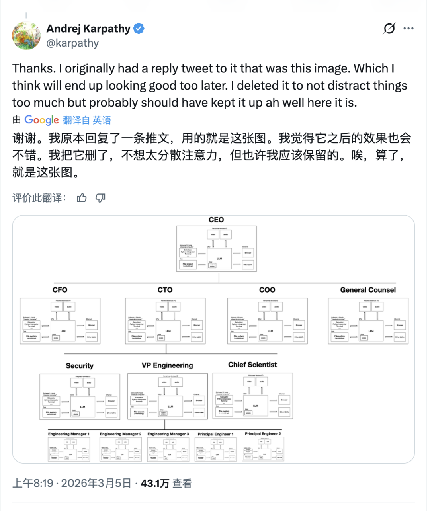
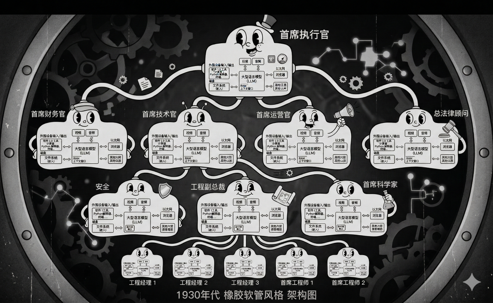
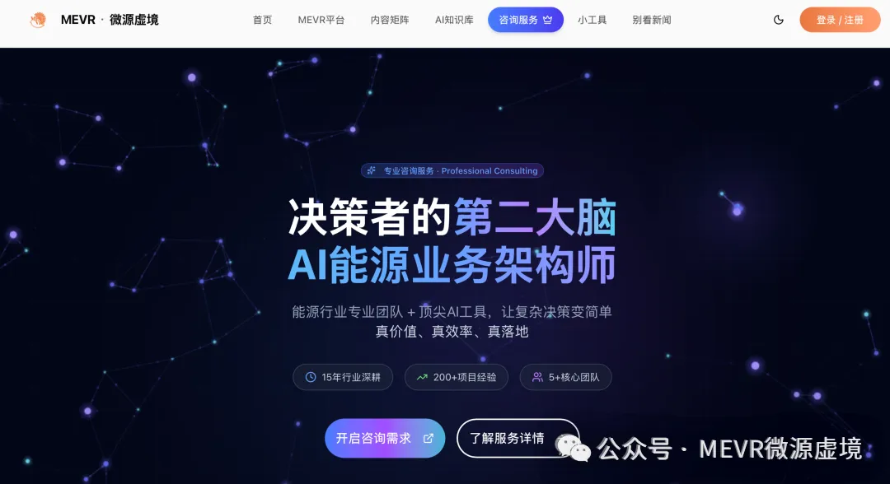

专注能源AI应用，关注MEVR·微源虚境。
Karpathy扔出一张图，很多公司的管理层要睡不着了
Karpathy 最近发了一张图。

很多人第一眼看过去，只会觉得，这不过是一张 AI 版组织架构图。CEO、CFO、CTO、COO、法务、工程负责人，职位都在，层级也都在，看起来没什么大不了。
但真正有杀伤力的地方，恰恰藏在最容易被忽略的位置。
这张图里，每一个岗位内部，几乎都是同一套结构。中间是 LLM，周围接着浏览器、Python、终端、文件系统、知识库、多模态输入，还能继续调用别的模型。
这个信号非常危险，也非常清晰。
AI开始改写的，已经不只是某几个岗位的工作方法，而是整家公司最底层的组织方式。
一句话，未来公司拼的，越来越不是谁人多，谁部门全，谁流程复杂。
拼的是，谁先把组织做成一套可运转、可复制、可放大的智能系统。

一、岗位正在从“一个人”变成“一个节点”
这张图最值得盯住的一点，是它把 CEO、CFO、CTO、法务、工程负责人，全都画成了同一种机器。
这意味着什么。
意味着未来岗位之间最大的差别，未必首先来自“谁更聪明”，而是来自四件事：看见什么信息，调用什么工具，拥有什么权限，对什么结果负责。
你能看到全局信息，你就更接近 CEO。
你能掌握预算和约束，你就更接近 CFO。
你能调动架构、工程、研究资源，你就更接近 CTO。
也就是说，岗位正在被重新定义为“认知节点”。
过去企业招一个人，更多是在买经验、买时间、买劳动力。以后企业塑造一个岗位，越来越像在搭一个带有上下文、工具链、权限边界和责任机制的工作单元。
这才是最根本的变化。
岗位开始从人力资源概念，变成系统设计概念。
二、管理者最值钱的能力，正在从“会做事”变成“会调系统”
很多人以为，AI进公司之后，最大的变化是基层提效。
这当然会发生，但更深一层的变化在管理层。
因为当每个岗位都开始拥有模型、工具、知识库和外部连接能力之后，管理这件事本身就变了。以后真正高杠杆的管理者，不一定是最辛苦、最亲自下场的那个人，而是最会调系统的那个人。
他知道任务该怎么拆。
知道不同 agent 该怎么配。
知道上下文该怎么喂。
知道结果该怎么验。
知道哪里该放权，哪里必须收口。
说得再直白一点，未来很多管理动作，核心能力会变成编排能力。
谁能把信息压缩清楚，谁能把任务分发到位，谁能把结果重新收敛回决策链条，谁就更有可能成为下一代组织里的关键角色。
所以，AI对管理层最狠的一击，不是减人，而是改考题。
以前考你会不会盯项目、催进度、抓执行。
以后考你会不会做上下文设计、工具编排、权限配置、责任收口。
三、下一代公司的竞争，本质上是“系统能力”的竞争
Karpathy 这张图真正吓人的地方，在于它提前把下一代公司的底层逻辑画出来了。
公司表面上还是公司，底层越来越像系统架构图。
组织图还会在，部门也还会在，但企业之间真正拉开差距的地方，会越来越集中在这些东西上：知识库做得深不深，工具链接得顺不顺，权限系统清不清，协作协议稳不稳，审计和反馈闭环强不强。
这背后对应的是一个非常现实的判断。
未来很多公司输，不是输在没有用 AI。
而是输在只把 AI 当成一个局部工具。
写写文案，做做纪要，提提效率，这些都太浅了。
真正的变化，是公司从“靠人硬撑着运转”，走向“靠系统持续放大个体能力”。谁先完成这一步，谁就先拥有更高的人效、更低的摩擦、更快的迭代速度。
到那时，人与人之间的差距当然还在，甚至会更大。
因为最后真正稀缺的，依然是定义目标的人，校准边界的人，处理例外的人，承担责任的人，做最终判断的人。
AI会吞掉大量重复性认知劳动，但它抬高的，是高质量决策者和高质量组织者的价值。
所以，Karpathy 这张图，表面上是在画岗位。
更深一层，它画的是下一代公司的雏形。
未来最强的公司，很可能都长得越来越像一套操作系统。
岗位会被重写，管理会被重写，组织竞争力也会被重写。
很多人还在讨论 AI 会不会改变员工。
答案已经越来越明显了：但员工没法适应AI变化的时候，不如直接AI来组成公司。

